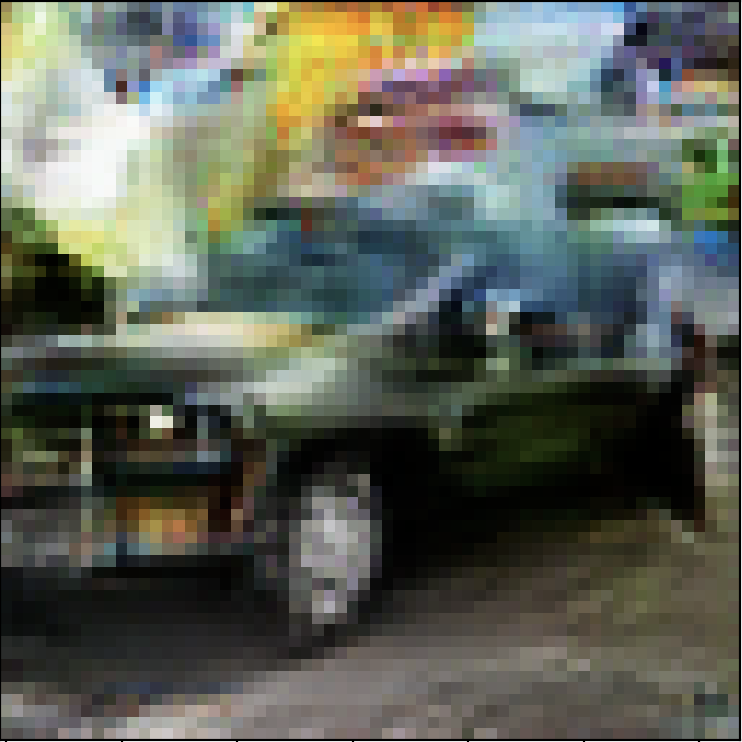

Ayan | |||
Totaled Cars! |
|||
What's a DC GAN Model? |
|||
|
First you need a dataset, something your model can learn off of. I used Stanford Cars, which has cars. Building the model(s) In order to generate the images your model has to know if it's generating correct ones or incorrect ones. You do this by asking it if an image (one from the dataset) is real. If it says yes then great! It's correct. If it thinks it's fake (which it's not) then the model trys to look at it differently. Rise and repeat. That’s called the discriminator. Next is the generator. (the fun part) Now the generator will try to make an image (at first it’s just random, it has to learn). Then it will “ask” the discriminator if it's real or fake. If the discriminator thinks it’s real then the generator did a good job. If not, then the generator has some tweaks to do. This whole process is trying to find the best weights. These are what the kernels value is. What's a kernel? The model sees and makes with kernels. It scans over the images, multiplying a grid of numbers with the image (an image is 3 sets, R G and B, of numbers in a grid, pixels) When the model multiplies a grid of numbers by its weights it can make a car! Now repeat this ~50,000 times Testing By this point you have (hopefully) trained the generator to make some realistic images! -ish In my case by best results was: You can see the wheels, the side & doors, the bumper (which is perfect) and the top/windshield. How can I make this better? Higher res images using a super resolution model. More on that later! |
|||
Some Examples |
|||

|  |